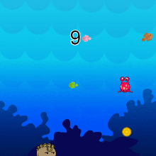

Hi
Tim Berners-Lee, in full Sir Tim Berners-Lee, (born June 8, 1955, London, England), British computer scientist, generally credited as the inventor of the World Wide Web. In 2004 he was awarded a knighthood by Queen Elizabeth II of the United Kingdom and the inaugural Millennium Technology Prize (€1 million) by the Finnish Technology Award Foundation.
Computing came naturally to Berners-Lee, as both of his parents worked on the Ferranti Mark I, the first commercial computer. (See computer: The first stored-program machines.) After graduating in 1976 from the University of Oxford, Berners-Lee designed computer software for two years at Plessey Telecommunications Ltd., located in Poole, Dorset, England. Following this, he had several positions in the computer industry, including a stint from June to December 1980 as a software engineering consultant at CERN, the European particle physics laboratory in Geneva.Tim Berners-Lee, in full Sir Tim Berners-Lee, (born June 8, 1955, London, England), British computer scientist, generally credited as the inventor of the World Wide Web. In 2004 he was awarded a knighthood by Queen Elizabeth II of the United Kingdom and the inaugural Millennium Technology Prize (€1 million) by the Finnish Technology Award Foundation.
Computing came naturally to Berners-Lee, as both of his parents worked on the Ferranti Mark I, the first commercial computer. (See computer: The first stored-program machines.) After graduating in 1976 from the University of Oxford, Berners-Lee designed computer software for two years at Plessey Telecommunications Ltd., located in Poole, Dorset, England. Following this, he had several positions in the computer industry, including a stint from June to December 1980 as a software engineering consultant at CERN, the European particle physics laboratory in GenevaTim Berners-Lee, in full Sir Tim Berners-Lee, (born June 8, 1955, London, England), British computer scientist, generally credited as the inventor of the World Wide Web. In 2004 he was awarded a knighthood by Queen Elizabeth II of the United Kingdom and the inaugural Millennium Technology Prize (€1 million) by the Finnish Technology Award Foundation.
Computing came naturally to Berners-Lee, as both of his parents worked on the Ferranti Mark I, the first commercial computer. (See computer: The first stored-program machines.) After graduating in 1976 from the University of Oxford, Berners-Lee designed computer software for two years at Plessey Telecommunications Ltd., located in Poole, Dorset, England. Following this, he had several positions in the computer industry, including a stint from June to December 1980 as a software engineering consultant at CERN, the European particle physics laboratory in Geneva
videos
Work
Writing two of Tim- bereners -lee
Apps
Sprite lab
.png)
play lab
.png)
.png)
Artist
.png)
.png)